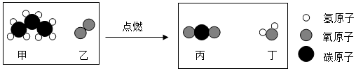

2019年北京市中考化学真题 · 选择题 第11、12题
11. 用下图装置进行实验。升温至60℃的过程中，仅①燃烧；继续升温至260℃的过程中，仅③燃烧。下列分析不正确的是（ ）

A. ①燃烧，说明白磷是可燃物
B. 对比①③，可说明红磷的着火点比白磷的高
C. 对比②③，可验证燃烧需可燃物与氧气接触
D. ④未燃烧，说明无烟煤不是可燃物
12. 丙烷（C3H8）是液化石油气的主要成分之一，燃烧前后分子种类变化的微观示意图如下。下列说法正确的是（ ）

A. 甲中碳、氢元素质量比为3:8B. 乙和丙的元素组成相同
C. 44g甲完全燃烧至少需160g乙D. 生成的丙与丁的分子个数比为1:1